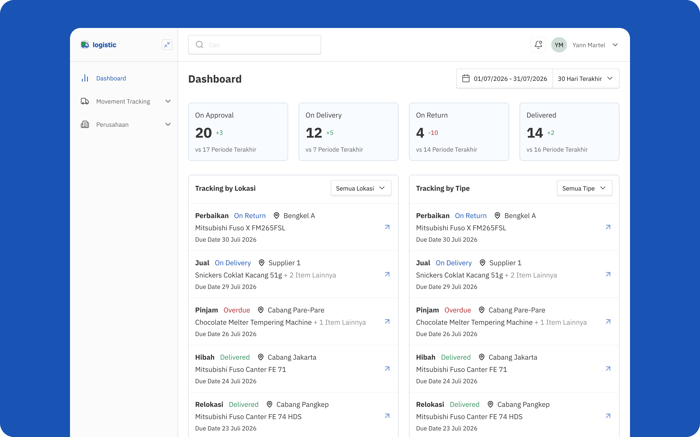
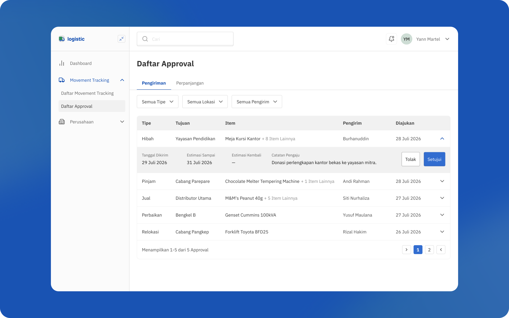
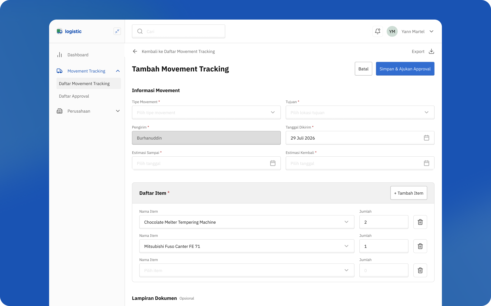

Aistech: Logistics Transfer Monitoring Platform Supporting Loan-Based Item Movement

Client
This came from a prospective client's request, a well-known chocolate manufacturer, needing a way to monitor item transfers between locations.
Problem
Beyond the sender and driver, no one else, managers or other staff, had visibility into where an item actually was once it left its origin, whether in transit, on loan, or handed over elsewhere. With a large volume of items moving around, they needed a single platform showing exactly where each item stood at any point. Unlike typical logistics platforms, this one also needed to support loan-type transfers, where an item's movement isn't complete until it's returned.
Process
I designed a complete flow covering the entire transfer process, from adding a new transfer, to tracking where each item currently sits, to marking checkpoints along its movement, and accommodating loan or repair-type transfers that only close out once the item returns to its origin. The visual direction drew from IBM's design language, systematic and rigid, but packaged in a way that still felt dynamic to use.
Outcome
A Complete Transfer Monitoring Flow, Ready to Ship
Delivered a full UI from first step to last, covering checkpoint-based tracking and loan-type transfers alongside standard shipments. The prospective client moved on before ever reviewing the design, leaving the product complete but currently on hold.

